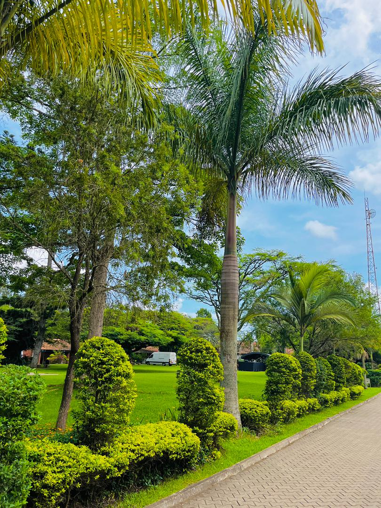
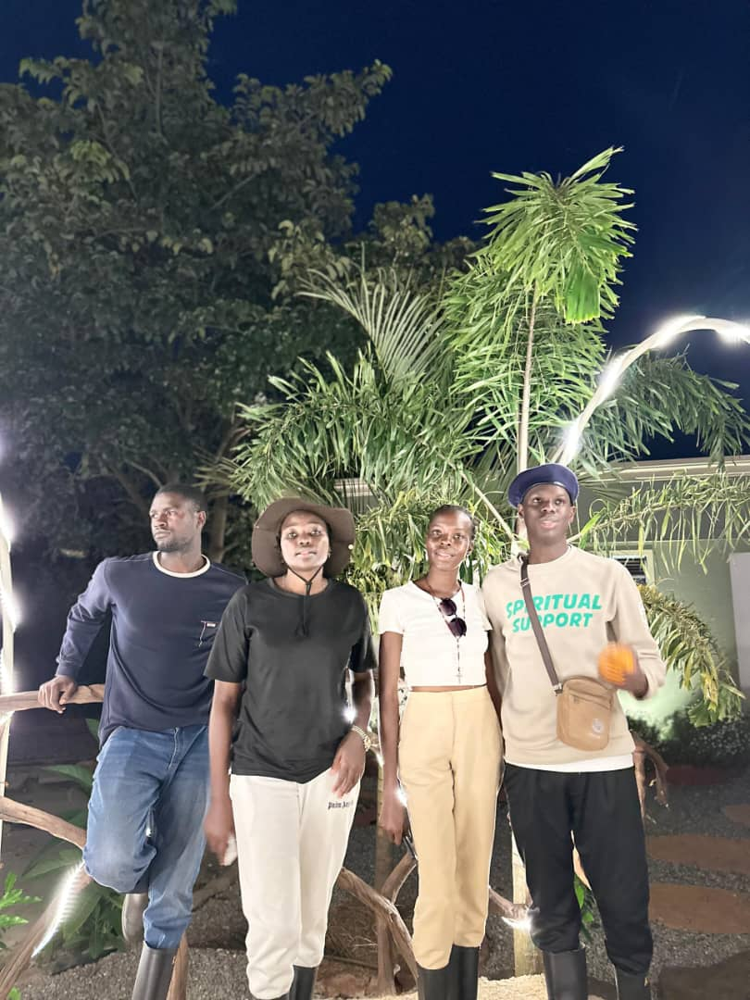
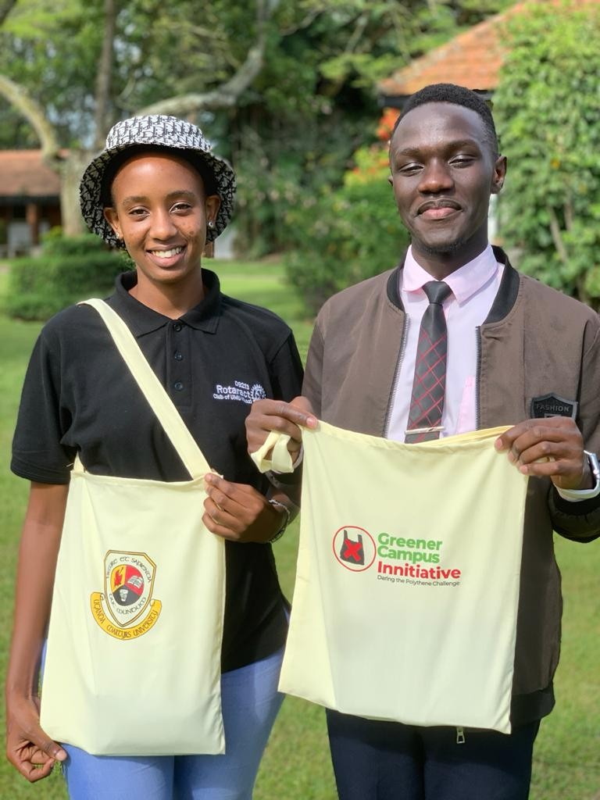

Who We Are
The Regional Centre of Expertise (RCE) Greater Masaka—initially designated as GMARCE—is an international, multi-stakeholder alliance officially certified by the United Nations University Institute for the Advanced Study of Sustainability (UNU-IAS). Anchored and hosted by the Faculty of Education at Uganda Martyrs University (UMU), the center operates as a vital strategic mechanism to bridge the historical gap between advanced academic research and grass-roots community needs. By establishing cooperative networks among higher education institutions, local municipal councils, civil society organizations, schools, and private enterprises, the center works to convert global sustainability frameworks into practical, transformative local actions.
At its core, RCE Greater Masaka functions as an institutional catalyst for regional resilience and lifelong learning. Rather than viewing sustainability through a purely theoretical lens, the center targets deep-rooted socio-economic vulnerabilities, transforming communities into living laboratories for sustainable development. By prioritizing youth inclusion, civic empowerment, and cross-sector resource sharing, the network ensures that local populations are equipped with the specialized skills, values, and environmental awareness necessary to safeguard their natural heritage while simultaneously building sustainable pathways to economic prosperity.
Our History
The origin of RCE Greater Masaka traces back to an intense realization within the academic community at Uganda Martyrs University that traditional, conventional educational pathways were ignoring critical regional development and ecological crises. This structural mismatch culminated in a comprehensive Education for Sustainable Development (ESD) Situation Analysis and foundational workshop held at the UMU campus on April 15, 2009. Spearheaded by core visionaries such as Brother Byaruhanga Aloysius, J.S. Ssentongo, and George Kyaboona, and supported by key national environmental leaders from NEMA and UNESCO, this baseline audit scrutinized the university's institutional practices and mapped out the initial paths required to integrate sustainability principles deeply into active curriculum pedagogy and community outreach.
Building upon the momentum of this initial situational assessment, the network officially crystallized during a landmark multi-sectoral stakeholder assembly convened at Uganda Martyrs University on July 11, 2013. This pivotal forum unified over 40 highly diverse delegates representing local municipal governments, regional primary and secondary school administrators, civil society groups, and private industry leaders. Facilitated by UMU’s Faculty of Education, the steering committee comprehensively debated and prioritized the severe ecological challenges crippling the sub-region—ranging from rampant land degradation to the loss of indigenous knowledge. This collective civic mobilization formed the structural backbone of the formal application submitted to the United Nations University in April 2014 under the leadership of Vice-Chancellor Prof. Dr. Charles L.M. Olweny and Dean Brother Aloysius Byaruhanga.

Location & Scope
RCE Greater Masaka operates strategically astride the equator within the crucial South-Eastern Lake Victoria crescent basin of East Africa. The physical epicenter and administrative headquarters of the network are hosted at the Uganda Martyrs University Nkozi Campus, situated along the primary Kampala-Masaka Highway exactly 82 kilometers southwest of the capital city. The surrounding basin defines the operational landscape for the network’s sustainability initiatives, offering a dynamic geographical mix of freshwater satellite lakes, river systems, and extensive wetlands. The center aligns its boundaries to target localized ecological hotspots facing severe environmental degradation across an interconnected grid of 13 districts, managing a territory that encompasses major natural resource landmarks, including the protected global Ramsar wetland systems of Nabajjuzi, Mabamba, Sango Bay, and Lutembe Bay, as well as the critically endangered forest reserves of Mpanga and Kalangala.
Demographically, the center addresses the pressing socio-economic needs of a rapidly expanding population of over 5 million citizens within these 13 districts. The sub-region is characterized by a profound human dependency level, with approximately 65% of the entire population under the age of 25, alongside a historically low average life expectancy below 48 years. The vast majority of these communities rely directly on the health of the surrounding water tables, fisheries, and soils, with roughly 75% of households subsisting on small agricultural holdings of one hectare or less.

Our Key Works and Initiatives
The primary operational works of RCE Greater Masaka are organized around a series of highly specialized, thematic Technical Working Groups designed to mitigate severe environmental degradation and reverse regional biodiversity losses. A critical area of focus centers on aggressive reforestation and watershed management within the fragile Lake Victoria Basin. Over the past several decades, expanding commercial ventures—such as the massive oil palm plantations in Kalangala—have cleared large swaths of virgin forests and swamp vegetation, resulting in altered microclimates and severe soil nutrient depletion. The RCE actively counters this ecological damage by leading community-driven indigenous tree planting campaigns, restoring degraded wetlands, and enforcing strict buffer-zone protection protocols to protect the region's essential water towers and prevent devastating agricultural chemical runoff.
In tandem with its landscape restoration efforts, the center works extensively to transform local agricultural systems and secure regional food safety. Because the vast majority of the population relies heavily on smallholder farming, declining soil productivity severely threatens local livelihoods. The RCE resolves this vulnerability by researching, documenting, and protecting invaluable indigenous farming knowledge and combining it with modern organic agriculture techniques. By teaching smallholder farmers agroforestry methods, organic composting, and climate-resilient crop rotation, the center helps local families restore organic matter to compacted soils, improve rainwater infiltration, and boost crop yields without depending on harmful, expensive synthetic chemicals.
Addressing the critical intersections of energy scarcity and waste management constitutes another vital branch of the center's field actions. Across the sub-region, over 90% of households rely almost exclusively on biomass wood fuel to meet their daily domestic energy demands, a practice that accelerates regional deforestation and disproportionately burdens women and young girls. The RCE combats this energy crisis by engineering and distributing affordable, eco-friendly alternative energy technologies, specifically focusing on household biogas units, solar power conversions, and fuel-efficient cookstoves. Concurrently, the center tackles heavy municipal waste build-up in expanding urban centers and promotes health and sanitation in rural villages by setting up organized waste-sorting schemes and teaching communities how to convert organic garbage into valuable agricultural compost.
